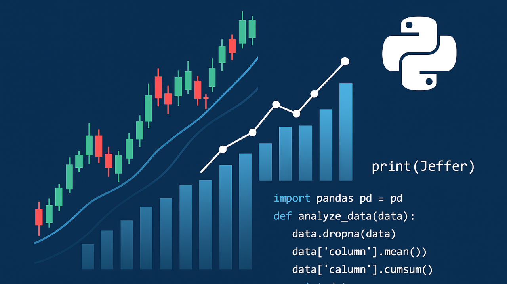

Reflexiones, ideas y liderazgo compartido por Jefferson Torres
Julio 19, 2025 | Publicado en LinkedIn
Crecer dentro de una organización no solo implica nuevas responsabilidades, sino también enfrentar desafíos humanos y emocionales. Uno de los primeros retos es que quien esté por encima de ti sepa reconocer tus habilidades de forma imparcial. Sin ese reconocimiento objetivo, las oportunidades se vuelven inciertas. Al mismo tiempo, también es importante que tus compañeros reconozcan tu valor: no solo por lo que haces, sino por cómo lo haces. La transición hacia un nuevo rol genera preguntas naturales: ¿serás respetado? ¿verán en ti a alguien confiable, capaz de guiar o tomar decisiones justas?
El crecimiento debe nacer desde la intención personal, no solo por una mejora económica, sino por el deseo genuino de seguir aprendiendo y aportar más. Implica apropiarse del trabajo, entender que cada decisión puede impactar a otros, y estar dispuesto a asumir responsabilidades más allá de lo técnico. Tener personas a cargo no es simplemente una tarea adicional; exige empatía, igualdad, y disposición a escuchar. Se trata de conocer a tu equipo, comprender lo que hacen, reconocer sus logros y hasta recordar detalles como sus cumpleaños. Eso también es construir confianza.
Asumir un rol con personas a tu cargo implica hacerse respetar sin imponerse, mantener la firmeza sin perder cercanía. Es saber defender tus ideas, abrir espacio para otras, y aceptar que el crecimiento profesional también requiere crecimiento personal. Como dijo John C. Maxwell: “Un líder es aquel que conoce el camino, anda el camino y muestra el camino.” Crecer no es solo avanzar en el organigrama; es avanzar en cómo conectas, representas y actúas por quienes caminan a tu lado.
Jefferson torres
Junio 15, 2025 | Publicado en LinkedIn
En ciudades como Bogotá, el trayecto al trabajo puede representar entre tres y cuatro horas diarias en transporte público. En muchos casos, las personas inician su jornada con altos niveles de estrés, sin haber podido despedirse de sus familias y enfrentando recorridos incómodos, ruidosos y agotadores. Este desgaste, día tras día, no solo afecta la salud física y emocional, sino también la productividad y el clima laboral.
El trabajo remoto ha transformado esta realidad. Al eliminar los traslados, una persona puede reconectar con su entorno familiar, organizar mejor su tiempo y encontrar espacios para el autocuidado, el descanso activo o incluso el aprendizaje. Es posible dedicar momentos diarios al focus time, donde se puede aprender algo nuevo, desarrollar una habilidad, o simplemente redescubrir la creatividad con una nueva perspectiva.
Dentro de la investigación para este escrito, encontré que existen empresas con más de diez años aplicando exitosamente este modelo de trabajo. Por ejemplo, GitLab, con más de 2,000 empleados distribuidos en más de 60 países, opera completamente de forma remota desde su fundación. Su éxito demuestra que este modelo no solo es viable, sino también escalable y eficiente cuando se gestiona con claridad y propósito.
Jefferson torres
Mayo 25, 2025 | Publicado en LinkedIn
En el entorno laboral, no siempre se trata de saber más o de hacer más, sino de construir espacios donde las personas se sientan valoradas. El respeto no depende del cargo que ocupamos, sino de la actitud con la que enfrentamos cada situación. Cuando hay respeto en un equipo, los desacuerdos no se convierten en conflictos, y los retos se transforman en oportunidades para crecer juntos. Un ambiente donde todos se escuchan y se reconocen, incluso en las diferencias, es un lugar donde las soluciones fluyen.
Respetar no es solo tratar bien a los demás. También significa cuidar nuestras funciones, ser puntuales, honrar nuestros compromisos y tener consideración tanto con quienes lideran como con quienes nos apoyan en las tareas más operativas. Es respetar el tiempo del otro, el esfuerzo del equipo y la identidad de la empresa. Cuando el respeto está presente, se construyen relaciones laborales duraderas y se fortalece la cultura organizacional desde adentro.
Como dijo el Papa Francisco: “El respeto mutuo y la búsqueda de diálogo son el camino para construir una sociedad justa.” Lo mismo aplica al trabajo. Respetar no es una debilidad ni una formalidad: es una decisión consciente que transforma equipos, eleva el rendimiento y nos recuerda que más allá de nuestras metas, somos personas compartiendo una misión común.
Jefferson torres
Mayo 19, 2025 | Publicado en LinkedIn
Hoy, la agilidad y la precisión son clave, es momento de cuestionar la creencia de que los lenguajes de programación como Python, SQL, HTML o JavaScript pertenecen únicamente al mundo de la ingeniería. En áreas como Finanzas, estos conocimientos han dejado de ser un valor añadido para convertirse en una ventaja competitiva. Automatizar reportes, transformar grandes volúmenes de datos en información valiosa o construir dashboards adaptados a las necesidades específicas del negocio, ya no son tareas exclusivas de TI. Hoy, cualquier analista puede —y debe— dominar estas herramientas para impulsar el cambio desde su rol.
Tomemos como ejemplo a Python y SQL: con ellos es posible automatizar procesos de conciliación contable, construir APIs internas para conectar diferentes fuentes de datos o depurar inconsistencias que antes consumían horas de trabajo. HTML y JavaScript, por su parte, permiten construir visualizaciones de datos interactivas —dashboards web personalizados— que, en muchos casos, representan una alternativa más flexible y económica frente a herramientas comerciales como Tableau o Power BI. Esto permite a los equipos centrarse en el análisis y la toma de decisiones estratégicas, en lugar de invertir su tiempo en tareas repetitivas y operativas.
Aprender un lenguaje de programación es mucho más que escribir código; Como dijo Steve Jobs: "es encontrar nuevas formas de hacer las cosas, es cuestionar el status quo." En las empresas modernas, entender estas herramientas no es una cuestión de título profesional, sino de mentalidad. Los lenguajes de programación no son solo para ingenieros: son para cualquier persona que quiera mejorar su entorno de trabajo, transformar sus procesos y pensar diferente.
Jefferson torres